2025
Formação
FIPP — Sistemas de InformaçãoGraduação
Desenvolvimento de projetos práticos durante a graduação, envolvendo programação, desenvolvimento web, modelagem de processos e criação de soluções digitais.
Olá! Sou Sofia Marques Kalife, estudante de Sistemas de Informação. Este portfólio reúne minha formação, habilidades e projetos acadêmicos, mostrando meu desenvolvimento na área de tecnologia e desenvolvimento de software.
Conheça meus projetos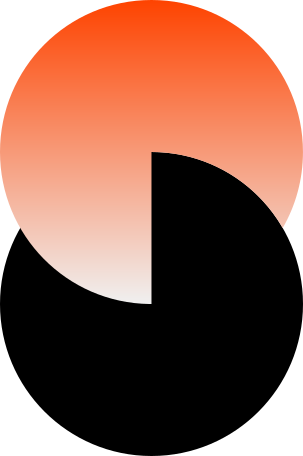
Tenho 19 anos e sou estudante de Sistemas de Informação na FIPP. Gosto de aprender na prática e transformar ideias em soluções digitais. Ao longo da graduação, venho desenvolvendo projetos que envolvem programação, desenvolvimento web, análise de processos e criação de soluções para diferentes necessidades.
Meu objetivo profissional é continuar evoluindo na área de tecnologia, adquirindo experiência e construindo uma base sólida para atuar no desenvolvimento de software.
Desenvolvimento de projetos práticos durante a graduação, envolvendo programação, desenvolvimento web, modelagem de processos e criação de soluções digitais.
Criação de páginas e aplicações web responsivas, trabalhando estrutura, estilos, interações e organização do código.
Conhecimento avançado da língua inglesa, com capacidade de comunicação, compreensão de textos e utilização do idioma em contextos acadêmicos e profissionais.
Graduação em Sistemas de Informação, com foco no desenvolvimento de conhecimentos em programação, análise de sistemas, banco de dados e tecnologias web.
Participação em projetos de desenvolvimento e atividades práticas envolvendo programação, modelagem de processos, desenvolvimento web e soluções digitais.
Busco ampliar continuamente meus conhecimentos em desenvolvimento de software, front-end e novas tecnologias.
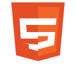
HTML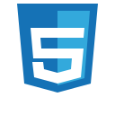
CSS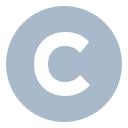
C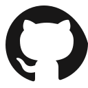
Git/GitHub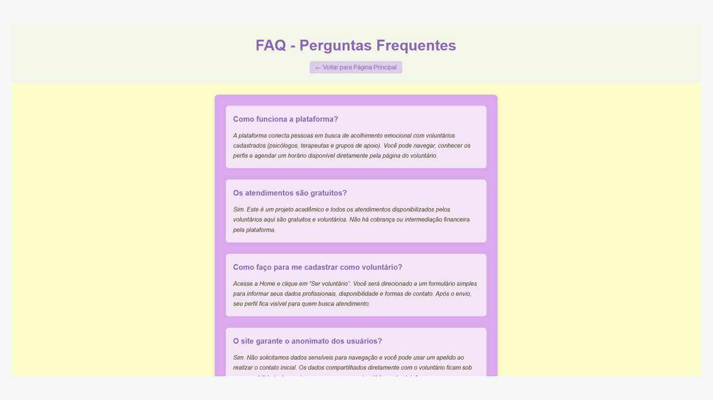
↗Projeto acadêmico
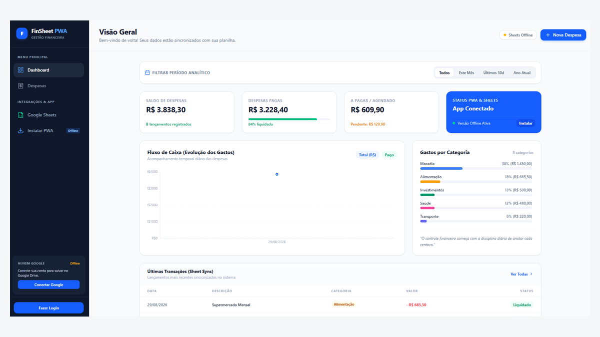
↗Projeto pessoal
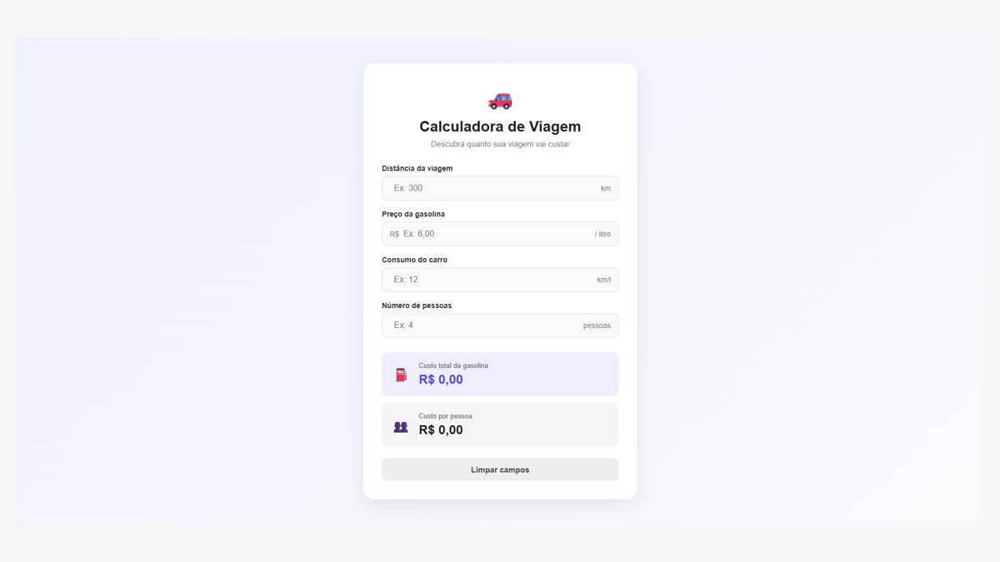
↗Projeto acadêmico
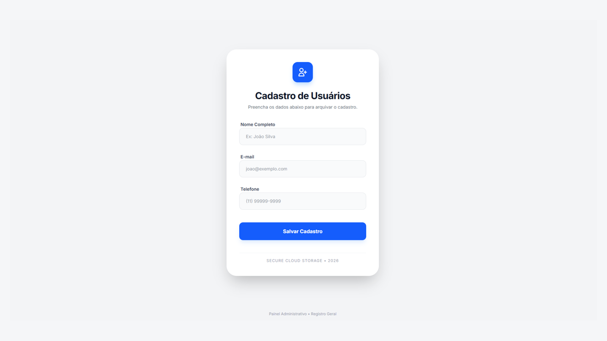
↗Projeto acadêmico
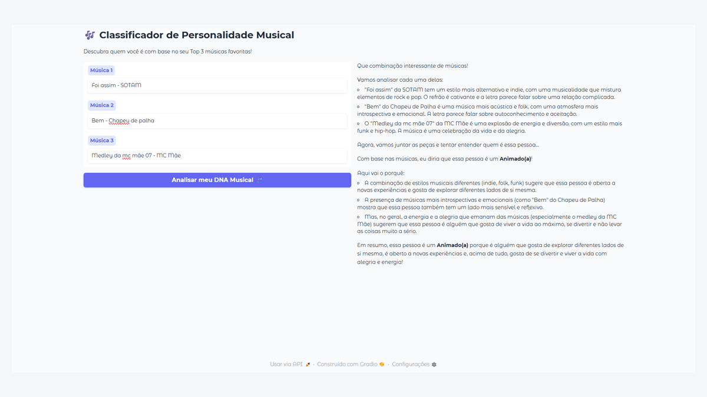
↗Projeto acadêmico
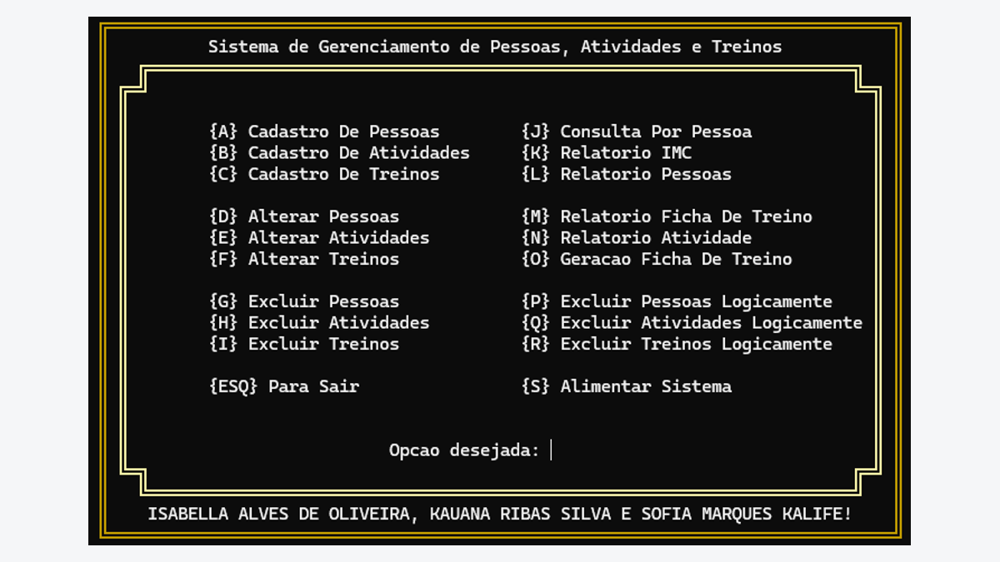
↗Projeto acadêmico